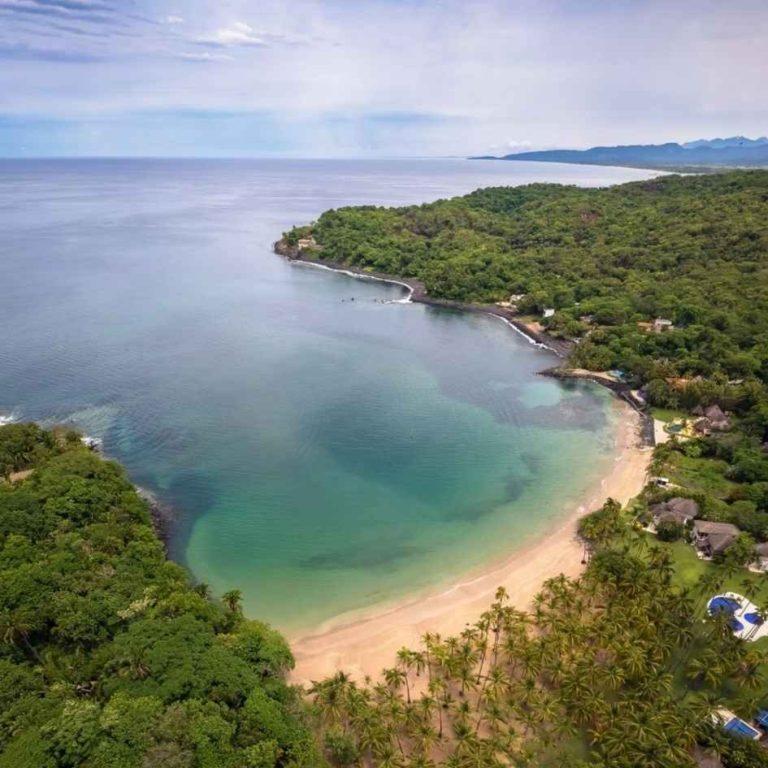
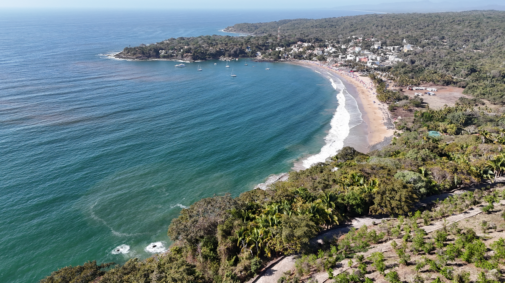
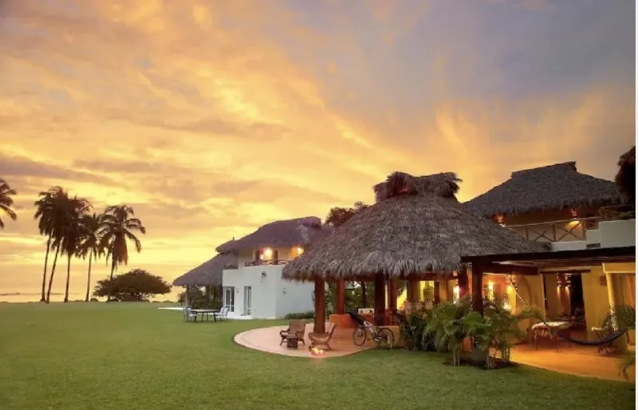
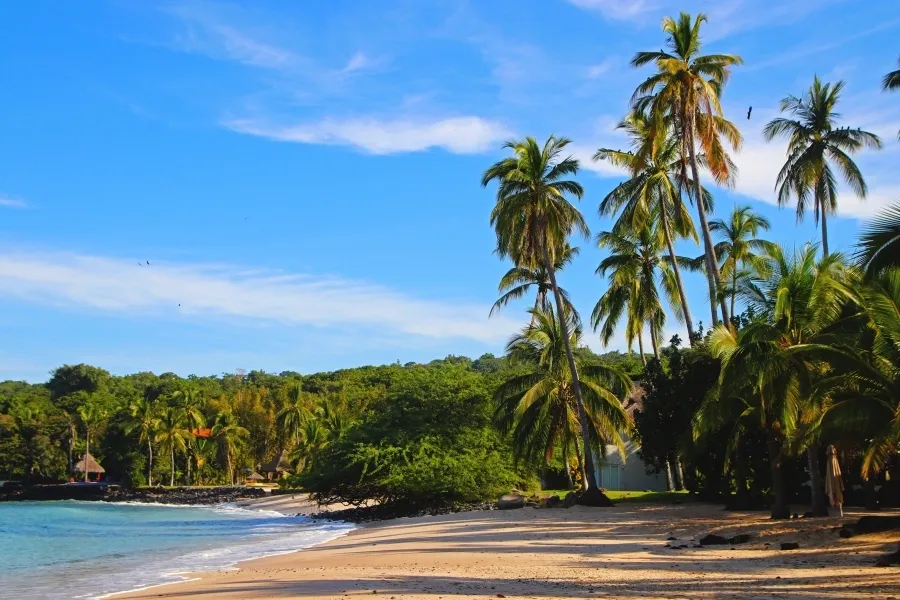
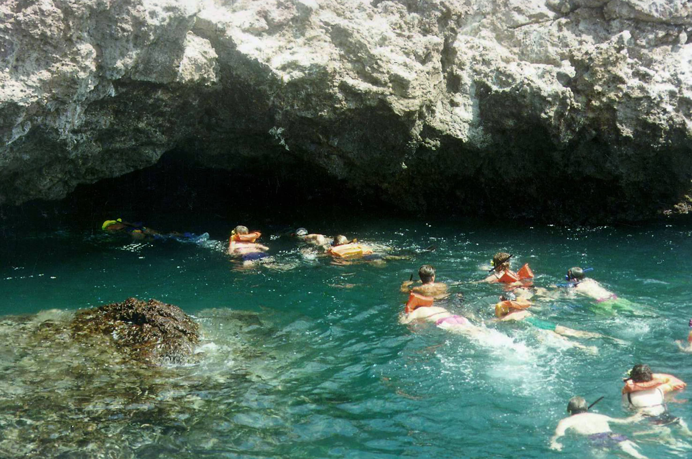
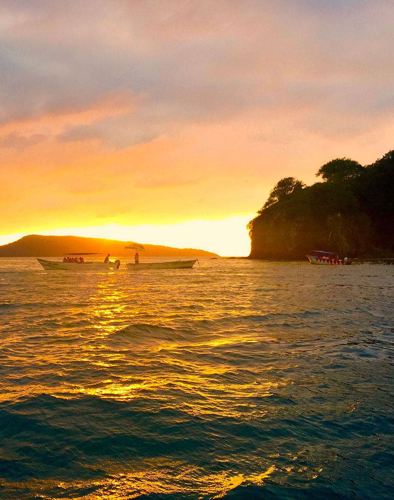

Dos Mundos en una Bahía: Exclusividad y Tradición
Ubicada en el corazón de una selva exuberante, esta zona ofrece dos experiencias únicas. Por un lado, Chacalilla, una bahía privada de aguas color esmeralda, famosa por sus villas de lujo y tranquilidad absoluta.
Por otro lado, su vecino Chacala, un vibrante pueblo pesquero lleno de vida, restaurantes locales y cultura. Juntos forman el destino perfecto para quienes buscan conectarse con la naturaleza sin sacrificar la comodidad.





Playas vírgenes, residencias privadas y cultura local
Una caleta exclusiva de oleaje muy suave, ideal para nadar y descansar en total privacidad, rodeada de vegetación tropical.
La zona de Chacalilla alberga algunas de las villas más espectaculares de la región, disponibles para renta vacacional de lujo.
A solo unos pasos, disfruta de pescado fresco, paseos en lancha y la auténtica vida local en la playa principal.
Una playa virgen cercana, accesible por sendero o lancha, famosa por sus formaciones rocosas y belleza salvaje.
Explora los caminos que conectan las playas con la selva, incluyendo la ruta hacia el antiguo cráter volcánico.
El ambiente tranquilo es perfecto para retiros de yoga y meditación, servicios ofrecidos en muchas de las villas y hoteles boutique.
Para disfrutar al máximo tu estancia en esta zona dual:

Tranquilo / Esmeralda
Villas y Hoteles Boutique
Buena en Villas
Privado y Relajado
Chacalilla y Chacala te esperan para desconectarte del mundo.
Ver en Google Maps